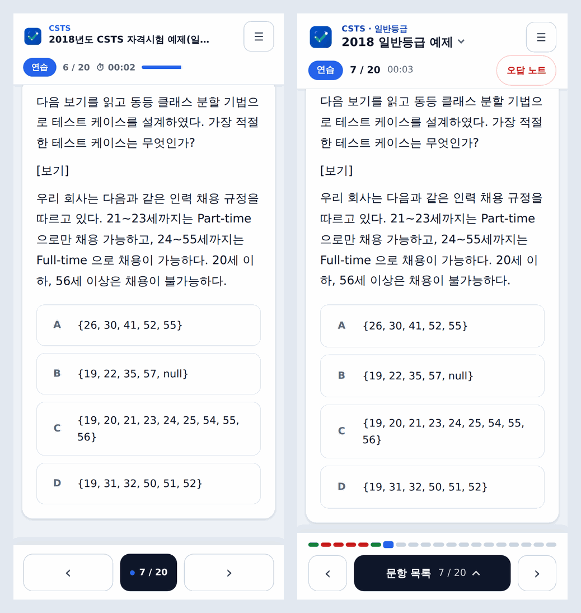

Wireframes & User Flows
정보 구조 · 클릭 프로토타입 · 상태 전이 · 화면 명세
이미 구현된 앱을 설계 문서 형태로 다시 그린 자료입니다. 화면 구성·문구·분기는 코드(MobileTopBar, Sidebar, QuestionWorkspace, AppModals, sessionDerive 등)와 docs/ui-mockups를 읽고 옮겼습니다.
1. 정보 구조(IA)
ISTQB / CSTS / 사이트 사용법→풀이 화면
상단
- 세트 이름 ▾ → 세트 선택 시트
- ☰ → 메뉴(드로어)
- 상태 줄: 모드 칩 · 위치 · 시간 · 오답 노트 칩
본문
- 문항 카드(지문·보기·그림·표·코드)
- 피드백(연습·오답은 즉시, 시험은 채점 후)
- 그림 눌러서 확대
하단 바
- 진행 스트립(정오 색)
- ‹ 이전 · 문항 목록 · 다음 ›
- 시험·퀵은 채점 줄이 붙음
연습 · 시험 · 퀵 · 오답오답 다시 풀기오답 노트📊 통계⚙ 설정📝 제보
챕터 미니 시험은 모드 탭에 없고 통계 화면에서만 들어갑니다.
2. 클릭 프로토타입
실제 앱의 화면·문구·분기를 로우파이로 옮겨 직접 눌러 보며 따라갈 수 있게 했습니다. 오른쪽 패널은 지금 보는 화면의 규칙과 코드 근거를 보여 주고, 아래 시나리오 버튼으로 주요 경로에 바로 들어갈 수 있습니다. 숫자는 모두 예시입니다.
3. 사용자 플로우
A. 약점 재측정 루프 PRD 핵심
합격선 미만 강조→ 약한 챕터 선택→ 연습(전체 보기) 또는 미니 시험(최대 10문항)→ 채점→ 챕터 통계 갱신
(문항 단위 최신 시도)
연습은 통계에 기록되지 않고, 미니 시험은 챕터 통계에는 반영되지만 세트 요약(평균·최고 정답률)에는 섞이지 않습니다. 프로토타입의 "약점 재측정 루프" 시나리오로 따라가 볼 수 있습니다.
B. 시험 모드 — 응시 → 채점 → 재응시
타이머 0부터→ 응시 중 🔒
세트·모드 변경 잠금→ 채점하기→ 결과 요약
합/불 · 직전 대비 ▲▼
예외 경로
- 미응답이 있다 → "제출 전 검토" 모달 → 번호 격자에서 미응답 문항으로 이동
- 응시를 그만둔다 → "응시 포기" → 확인 → 답안 삭제, 기록 없음
- 제한시간이 끝난다 → 자동 제출(미응답은 오답). 5분·1분 남았을 때 토스트
- 자리를 비웠다 돌아온다 → 30초 이상이면 "자리를 비운 N도 시험 시간에 포함됐습니다" 안내
- 뒤로가기 → "시험 화면 나가기": 답안은 저장되지만 제한시간은 계속 흐른다
- 다시 풀고 싶다 → 결과 모달의 "다시 풀기" 또는 활성 모드 탭 재클릭
재접속 경로
- 답안이 있는 시험으로 다시 들어오면 이어풀기 / 새로 풀기
- 이미 채점된 회차면 가드: "지난 결과 보기 / 새 회차 시작"만 제공(재채점으로 회차가 중복 쌓이는 것 차단)
- 앱은 항상 제품 게이트로 시작하고, 저장된 진행은 제품을 고른 뒤 복원
C. 퀵 랜덤 — 끝을 정하지 않는 모드 (문항 단위 흐름)
미선택→ 답 선택 답 선택됨
[채점하기] 활성
복수정답은 다 골라야→ 채점하기 채점됨
정답·해설 열림
점수판 갱신→ [다음 문제 ›]→ 다음 문항
이동 규칙
앞으로 가는 ›는 없고, 채점 뒤에 나타나는 "다음 문제 ›" 하나뿐입니다. 채점하지 않은 문항을 넘기면 집계에 남지 않은 채 지나가기 때문입니다. 뒤로 ‹는 열려 있어 이미 채점한 문항을 다시 볼 수 있습니다. 더 낼 문항이 없으면 "다시 섞어 시작".
오답의 행방
회차 기록은 남지 않고(요약·타임라인·IndexedDB 모두), 오답은 오답 노트의 "⚡ 최근 퀵 오답"에 출처 세트와 함께 24시간 보관됩니다. 챕터 약점 분석에는 기여합니다.
4. 상태 전이도 — 시험 모드
시험 모드의 상태는 저장된 값에서 파생됩니다(deriveExamStage). 게이트·잠금·응시 개시 여부가 서로 다른 곳에서 따로 계산되면 어긋나기 때문에 한 함수로 모았습니다.
핵심 판정식 (deriveExamStage)
showExamGate= 시험 ∧ ¬examStarted ∧ ¬isGraded ∧ answered = 0examLocked= 시험 ∧ examStarted ∧ ¬isGradedexamUnderway= 시험이 아니거나 ∨ examStarted ∨ answered > 0
answered > 0을 개시로 보는 것은 이어풀기 복원을 응시 중으로 취급하려는 것입니다.
이 구조가 막는 문제
- 게이트가 워크스페이스만 가리면, 사이드바의 "채점하기"로 응시한 적 없는 시험이 0/N 유령 회차로 기록됨 →
examUnderway로 차단 - 채점 후 새로고침이 미채점처럼 보여 같은 답안이 중복 회차로 쌓임 → S2 재접속 가드
상태 × 가능한 행동
| 행동 | S0 게이트 | S1 응시 중 | S2 채점 완료 |
|---|---|---|---|
| 세트 변경 | 가능 | 잠금 🔒 | 가능 |
| 풀이 모드 변경 | 가능 | 잠금 🔒 | 가능 |
| 문항 보기·답 선택 | 게이트가 가림 | 가능(정오 비공개) | 정오 공개 |
| 채점하기 | 불가(응시 전) | 가능 → 미응답 있으면 검토 모달 | "결과 요약"으로 대체 |
| 오답 노트 칩 | 표시 | 숨김 | 표시 |
| 응시 포기 | — | 가능(확인) | — |
| 처음 화면으로 | 바로 | 확인 모달(답안 저장) | 바로 |
| 제한시간 | 표시만(ISTQB 60분 · CSTS 90분) | 진행 · 경고 · 자동 제출 | 정지 |
퀵 모드의 상태 (문항 단위)
| 상태 | [채점하기] | [다음 문제 ›] | 정답·해설 | 점수판 집계 |
|---|---|---|---|---|
| 미선택 | 비활성 | 없음 | 닫힘 | 미반영 |
| 선택됨(채점 전) | 활성 | 없음 | 닫힘 · 보기 변경 가능 | 미반영(고른 것만으로는 세지 않음) |
| 채점됨 | 사라짐 | 같은 자리에 표시(더 낼 문항이 없으면 "다시 섞어 시작") | 열림 · 보기 잠금 | 진행·정답·오답·연속 갱신 |
5. 모드 비교
| 연습 | 시험 | 퀵 | 오답 | 챕터 미니 시험 | |
|---|---|---|---|---|---|
| 입구 | 모드 탭 | 모드 탭 | 모드 탭 | 모드 탭 / "오답 다시 풀기" | 통계 화면만 |
| 정답 공개 | 답 선택 즉시 | 채점 후 | 문항별 채점 후 | 즉시 | 채점 후 |
| 제한시간 | 없음(경과 시간) | ISTQB 60분 · CSTS 90분 | 없음 | 없음 | 없음 |
| 출제 범위 | 세트 전체(순서대로) | 세트 전체 | 제품 전 세트 섞기 · 재수록 1회 | 틀린 문항만 | 한 챕터에서 최대 10문항 |
| 이동 | 자유 | 자유(문항 목록 시트) | ‹ 와 "다음 문제 ›"만 | 자유 | 자유 |
| 회차 기록 | 없음 | 있음 | 없음(24시간 오답만) | 없음(표본 왜곡 방지) | 있음(챕터 표식) |
| 챕터 통계 반영 | 없음 | 반영 | 반영(채점한 문항만) | — | 반영 |
| 세트 요약(평균·최고) | — | 반영 | 미반영 | — | 미반영 |
| 합격 판정 | — | ISTQB 65% · CSTS 가중 75% | 없음 | — | 결과 모달이 같은 합격 판정을 쓰는 것으로 보임(미니용 분기 없음) — 실화면 미확인 |
| 오답 노트 | 쌓이지 않음 | 세트별 합집합 | "최근 퀵 오답" 24시간 | 맞히면 "복습 완료"로 제거 | 세트별 합집합에 포함(사용설명서 기준) |
근거: utils/modeLabel.ts(모드 캡션), UserGuide.tsx, README.md 주요 기능, docs/harness/app-logic.md 시나리오 매트릭스. 미니 시험의 오답 노트 포함 여부는 사용설명서 문구("시험·미니 시험에서 틀린 문항")를 따랐습니다.
6. 화면 명세
프로토타입에 들어 있는 화면의 구성 요소와 상태를 표로 풀었습니다. 펼쳐서 확인하세요.
S-01 · 풀이 화면 (연습)
진입
제품 선택 후 기본 모드, 또는 드로어의 모드 세그먼트 "연습".
| 영역 | 구성 요소 | 상태·동작 |
|---|---|---|
| 상단바 | 로고 · 제품(ISTQB) · 세트 이름 ▾ · ☰ | 세트 이름은 시트를 연다. 드로어가 열려 있는 동안 상단바와 상태 줄은 보조기기에서 숨겨진다(inert) |
| 상태 줄 | 모드 칩 · 위치(n / N) · 시간 · 오답 노트 칩 | 어떤 조합에서도 잘리거나 꺾이지 않아야 한다(미니 시험 칩, 1:05:12 시계, 세 자리 배지 — 320px에서도). 칩의 숫자는 오답 노트가 나열하는 문항 수와 같다 |
| 문항 카드 | 문제 번호 · 챕터 배지 · 지문 · 보기 A~D | 복수정답은 "문제 n · 복수정답"으로 표시. 지문의 표·코드·그림은 구조화된 블록으로 렌더링. 그림은 "눌러서 확대" |
| 피드백 | ✅/❌ + 정답 + 해설 | 연습·오답은 답 선택 즉시. 문항을 옮겨도 목록의 ✓/✕와 카드가 어긋나지 않도록 저장된 답안에서 파생 |
| 하단 바 | 진행 스트립 · ‹ · 문항 목록 n/N ⌃ · › | 칸이 40개를 넘으면(CSTS 70문항) 간격을 줄여 한 줄에 담는다. 색만으로 상태를 전달하지 않도록 컨테이너가 수치를 말로 읽어 준다 |
예외·엣지
- 문항 목록을 불러오는 중에는 스켈레톤 카드를 보인다.
- 챕터 필터에 해당 문항이 없으면 "이 세트에는 ‘챕터’ 챕터 문항이 없습니다." + "전체 문항 보기".
- 이어풀기 복원 시 "이전에 풀던 위치에서 이어집니다 — 현재 n / N번 문항" 배너에 [처음부터]·[계속하기].
S-02 · 시험 시작 게이트 / 응시 중
| 구성 | 내용 |
|---|---|
| 게이트 카드 | "시험 모드" / 세트 이름 · 총 N문항 · 제한시간 / 잠금 안내 / [시험 시작] |
| 상태 줄(응시 중) | 시험 칩 · 위치 · 남은 시간(5분 이하 경고색, 1분 이하 위험색). 오답 노트 칩은 숨김 |
| 잠금 안내 | "🔒 시험 응시 중 — 채점 후 세트·모드를 변경할 수 있습니다." |
| 채점 줄 | [채점하기] + "답안 선택 후 채점하세요." → 채점 후 "결과 요약" |
| 정오 표시 | 응시 중에는 숨김. 문항 목록은 "푼 문제"만 표시 |
타이머 규칙
- 시작 시 0부터. 시간 표시는 남은 시간.
- 5분·1분 남은 지점에 토스트("시험 종료까지 mm:ss 남았습니다.").
- 제한시간이 지나면 "제한시간이 종료되어 자동으로 제출했습니다." — 미응답은 오답 처리(수동 채점과 같은 규칙).
- 백그라운드·자리 비움: 돌아왔을 때 비운 시간이 30초 이상이면 안내하고, 그 사이 제한시간이 끝났으면 즉시 제출.
S-03 · 퀵 랜덤
| 구성 | 내용 |
|---|---|
| 상단바 | 제품 · "퀵 랜덤" — 세트 이름·셀렉트는 없다(전 세트를 섞는 모드라 "현재 세트"가 없음) |
| 상태 줄 | 퀵 칩만. 위치·시간 없음(끝이 없어 분모가 없고 기록도 안 남김) |
| 점수판 | 진행 · 정답 · 오답 · 연속(최고 n). 채점한 문항만 센다. 낭독은 묶음 하나로(role=status) |
| 메인 버튼 | [채점하기](답을 다 골라야 활성) → [다음 문제 ›] → (끝이면) [다시 섞어 시작] |
| 메뉴 안내 | "퀵 진행 중 — … 전 세트를 섞어 한 문항씩 냅니다. (서답형도 섞이되, 어디서 끊어 봐도 30%를 넘지 않아요) 제한시간은 없고, 한 문항씩 채점합니다…" |
S-04 · 학습 통계
| 영역 | 내용 | 규칙 |
|---|---|---|
| 요약 3칸 | 응시 횟수 · 평균 정답률 · 최고 정답률 | 미니 시험·퀵은 포함하지 않음(세트 단위 회차만) |
| 챕터별 정답률 | 이름 · 정답률(맞은 수/푼 수) · 막대 · [연습] [미니 시험] | 낮은 순. 합격선 미만은 빨강 + 글자 단서. 같은 문항은 최신 결과만. 연습·미니 시험은 한 쌍(같은 줄·같은 폭·44px) |
| 판단하기 이른 챕터 | 표본 5문항 미만 | 순위에서 분리. "다른 세트를 풀면 표본이 쌓입니다" |
| 세트별 회차 이력 | 1회 → 2회 → … 정답률 · 모드 · 첫→최신 성장폭 | 미달 행은 테두리를 중립으로 두고 정답률 숫자만 붉게. 회차 번호는 글자로("1회") |
| 짧은 세션 기록 | 챕터 · 출처 세트 · 정답률 · 소요 · 날짜 · ✕ | 두 줄 격자 — ✕가 혼자 셋째 줄로 떨어지지 않게 |
| 헤더 | 이력 비우기 · 닫기 | 이력 비우기는 퀵 임시 오답도 함께 지운다 |
S-05 · 오답 노트와 오답 보기
| 화면 | 내용 |
|---|---|
| 세트 목록 | "⚡ 최근 퀵 오답"(24시간, 출처 세트 표기) + "📗 세트별 오답"(세트 이름 · 전 회차 합산 n회 · 오답 m) |
| 세트의 오답 | ← 세트 목록 · 문제 n · 내 답 · 정답 · ›. "✓ 극복" 문항은 흐리게 |
| 오답 보기(본문) | 문제 n + "오답 보기" 배지 · 내 답/정답 · 해설 · ‹ ›(같은 세트의 다른 오답) · [← 오답 노트] · [풀이로 돌아가기] |
극복 판정
해당 세트의 시험 모드 최근 2회에서 모두 맞힌 문항. 응시가 2회 미만이면 판정하지 않습니다. 랜덤·미니 시험은 추첨에 그 문항이 들었는지 이력만으로 알 수 없어 근거에서 제외합니다.
S-06 · 문항 목록 시트 / 세트 선택 시트
| 시트 | 구성 | 규칙 |
|---|---|---|
| 문항 목록 | 필터(전체/안 푼 문제/오답) · [오답 N문제 다시 풀기] · 번호 격자 · 범례 | 응시 중에는 정오를 숨기고 "푼 문제"로 표시. 범례는 상태에 맞게 바뀜(정답·오답 / 푼 문제 / 지금 문제 / 안 푼 문제) |
| 세트 선택 | 현재 제품의 세트 행 · "✓ 선택됨" | 제품 분할 버튼은 없음(제품 전환은 처음 화면으로). 표시 이름은 규칙에서 파생 |
7. 모달·확인 대화상자 카탈로그
사용자가 되돌릴 수 없는 일을 하기 전에 묻는 모든 모달입니다. 제목과 버튼 문구는 코드 그대로입니다.
| 제목 | 언제 뜨나 | 핵심 문구 | 버튼 → 결과 |
|---|---|---|---|
| 이어풀기 | 재접속·세트 변경 시 시험 답안이 있을 때 | "이전에 풀던 시험 기록이 남아 있습니다. 이어서 풀까요, 아니면 처음부터 새로 풀까요?" | 새로 풀기 → 게이트부터 / 이어풀기 → 응시 중 복원 |
| 채점 완료된 회차 | 채점을 마친 시험으로 다시 들어올 때 | "…같은 답안을 다시 채점하면 회차가 중복으로 쌓여 통계가 왜곡됩니다." | 지난 결과 보기 / 새 회차 시작 |
| 제출 전 검토 | 미응답이 있는 채 채점할 때 | "아직 답하지 않은 문항이 N개 있습니다. 그대로 채점할까요? (미응답은 오답 처리됩니다)" | 계속 풀기 / 채점하기. 한 문항도 안 풀었으면 0점 회차 경고 |
| 응시 포기 | 응시 중 메뉴의 "응시 포기…" | "지금까지의 답안은 삭제되고 회차 기록은 남지 않습니다." | 계속 응시 / 포기하기 |
| 처음 화면으로 | 응시 중 처음 화면 이동 | "이동해도 답안은 저장되며, 시험 탭으로 돌아오면 이어풀 수 있어요." | 계속 응시 / 이동 |
| 시험 화면 나가기 | 응시 중 뒤로가기 | "나가도 답안은 저장되지만 제한시간은 계속 흐릅니다." | 계속 응시 / 나가기 |
| 처음부터 풀기 | 이어풀기 배너의 [처음부터] | "지금까지 고른 N문항의 답이 지워지고 1번 문항부터 다시 시작합니다." | 계속 풀기 / 처음부터 풀기 |
| 세트 변경 | 랜덤(미니 시험) 진행 중 세트를 바꿀 때 | "…지금 뽑힌 문항과 답안이 사라집니다 (랜덤은 세트별로 보관하지 않습니다)." | 계속 풀기 / 세트 바꾸기 |
| 백업 가져오기 | 설정 → 기록 가져오기 | "지금 풀던 답안과 진행 위치는 백업본으로 교체되고, 응시 이력은 기존 기록과 합쳐집니다. 교체된 답안은 되돌릴 수 없습니다." | 취소 / 가져오기 |
공통 규칙: 모달·시트는 z-index가 같아 DOM 순서가 앞뒤와 Esc 대상을 정합니다. 시트를 연 채 확인 모달을 띄우면 시트가 확인을 덮고 탭을 삼키므로, 확인을 묻는 쪽이 시트를 먼저 닫습니다. 새 오버레이는 안드로이드 뒤로가기 레지스트리에 등록해야 합니다. 근거: docs/harness/ui-render.md, app-logic.md 11번.
8. 모바일 풀이 흐름 개편 — 이전 → 이후
하단 바, 문항 목록, 세트 선택, 그림 확대를 한꺼번에 바꾼 개편입니다. 시안(정적 HTML 5화면) → 구현 → 실제 화면 보고 다시 다듬기 순서로 진행했습니다.
| 화면 | 이전 | 이후 | 판단 근거 |
|---|---|---|---|
| 하단 바 | ‹ [● 7/20] › | 진행 스트립 + ‹ [문항 목록 7/20 ⌃] › | 위치만 알려 주던 가운데 칸을, 진행 상황을 보고 누르는 칸으로 바꿈 |
| 문항 이동 | 모달 | 바텀 시트(번호 격자) | 모바일에서 한 손으로 열고 닫는 흐름 |
| 세트 선택 | 드로어 안 셀렉트 | 상단 세트 이름 ▾ → 시트 | 세트를 바꾸는 일이 메뉴 두 단계 안에 묻혀 있었음 |
| 오답 노트 칩 | 분홍 채움·빨간 테두리·빨간 글자(에러 배너처럼 보임) | ☰와 같은 중립 버튼, 붉은색은 개수 배지에만 | 실제 화면에서 본 뒤 다시 그림 |
| 통계 챕터 행(모바일) | 브라우저 기본 회색 버튼, 혼자 아랫줄로 떨어지던 미니 시험 | 연습·미니 시험을 한 쌍으로(같은 줄·같은 폭·44px) | 터치 타깃, 줄 꺾임 검사를 자동 테스트로 고정 |

docs/ui-mockups/screenshots/compare-1-solve.png). 문항 본문이 보이므로 공개 시에는 문항이 없는 화면으로 교체합니다.근거: docs/ui-mockups/README.md, docs/ui-mockups/01~05-*.html, docs/harness/ui-render.md
이 문서는 저장소(WindowHyun/ISTQB)의 코드·문서·이슈를 근거로 정리했습니다. 근거는 문장마다 파일 경로로 적었고, 사용자 조사 데이터는 없어서 가설은 가설로 표시했습니다.